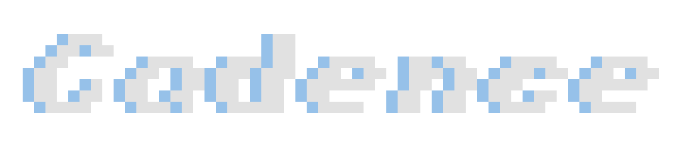
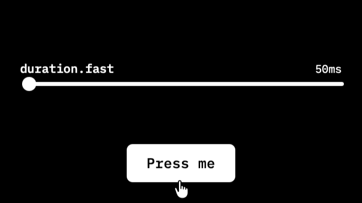

Case Study

Cadence is a motion design system explorer. It demonstrates how design tokens drive animation behavior in real UI components, through the classic 12 principles of animation and six design-engineering extensions. It is built as a curriculum for designers learning how motion works at the system level.
Role: Solo. Design, architecture, development, documentation.
Timeline: Thirteen weeks to production. First commit April 18, 2026; live July 15, 2026, and still shipping. 268 commits as of July 28.
Stack: React, Framer Motion, CSS Custom Properties, Rive, Vite.
Live: cadence.davidpreli.com
The Problem
Motion in design systems is underdocumented. A design system will specify every color to the hex digit and every spacing step to the pixel, then describe its motion in a paragraph: two duration values, an easing curve named "standard," and a sentence asking for restraint.
I spent eight years on the other side of that paragraph. A motion designer tunes timing in After Effects until it reads right, exports a spec, and hands it across a wall. What comes back rarely moves the way the spec did, and there is no shared surface where both sides can watch a value become a behavior. The relationship between a token and its perceptual result is invisible unless someone builds the thing that makes it visible.

Cadence is that thing. Drag duration.fast from 50ms to 350ms and watch a button's press change character in the same second. The argument underneath: the freedom motion designers have in After Effects is not lost when motion enters a design system. It is organized, named, and made legible, and the organizing is a skill motion designers already have.
Goals
- Build a tool that makes the token-to-behavior relationship visible and interactive
- Apply the classic 12 principles of animation, plus 6 design-engineering extensions, to real UI components, not abstract shapes
- Develop React and design systems fluency through a project with genuine utility
- Produce a portfolio artifact that demonstrates design engineering thinking
The Chapters
- The Token System: five token families, the two-channel dispatch, and the bezier that spent three months claiming to be a spring
- The Principles: eighteen cards, the classic twelve plus six extensions, each demonstrated on a real component, with build notes for all eighteen
- Fields and Canvases: fifty tiles on one clock, tokens crossing into WebGL, and a generative background that listens to the presets
- Key Decisions: why
layoutIdleft the codebase, why the grid took five tries, and the bug that existed only in production - What I Built, What I Learned: the shipped surface, the numbers, and what the build changed about the builder
Going Deeper
Four companion documents, each a different cut of the same project:
- The Plain Overview: what Cadence does, in plain language, no engineering required
- Two Lexicons: the technical paper, organized as a translation table between motion design and design engineering
- Working with Claude: how the human-AI collaboration ran, and which methods earned their keep
- What This Demonstrates: the direct version, for hiring managers
- Live tool: cadence.davidpreli.com
- GitHub: github.com/StudioDavidPreli/cadence
- Portfolio: davidpreli.com